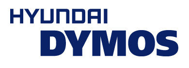

현대트랜시스 Hyundai Transys
현대트랜시스(Hyundai Transys)는 대한민국 현대자동차그룹 계열의 자동차 부품 기업이다. 변속기를 주력으로 만들며 액슬, 시트 등의 자동차 부품도 생산한다.
최종 업데이트

현대트랜시스는 어떤 브랜드인가
현대트랜시스(Hyundai Transys)는 대한민국 충청남도에 본사를 둔 현대자동차그룹 계열의 자동차 부품 기업이다. 주로 만드는 제품은 변속기이며, 액슬과 시트 등의 부품도 생산한다.
한국을 비롯해 미국, 중국, 멕시코, 브라질, 체코, 슬로바키아, 독일, 오스트리아, 인도, 인도네시아까지 총 11개국 33개 사업장을 통해 세계의 고객들에게 부품을 공급하며, 대륙별 거점을 중심으로 해외 공급망을 확대해 왔다. 연간 생산능력은 파워트레인 830만, 시트 482만대이다.
파워 트레인에서 시트까지 사업 분야를 확대하며 현대자동차그룹 핵심 부품계열사로 자리잡았다. 비전은 'Creative Leader For Mobility Innovation(미래 모빌리티 혁신의 창조적 리더)'이다.
현대트랜시스는 어떻게 시작되고 성장했나
1994년 2월 현대기술개발이라는 이름으로 설립했다. 1997년 현대정공의 변속기 사업을 인수했고, 1998년 서산 파워트레인 공장을 준공했으며, 2002년에는 코리아정공을 합병했다.
2003년 다이모스로 사명을 바꾸었고, 2004년에는 미국 디트로이트 법인과 중국 북경 시트 법인을 설립하며 시트 사업에 진출하고 현대오토모티브(현 현대엠시트)를 인수했다. 2007년 화성구동 연구센터와 동탄시트연구센터를 준공했고, 2011년 현대다이모스로 사명을 변경했다.
2019년 1월 자동변속기 업체인 현대파워텍을 흡수 합병하고 현대트랜시스로 사명을 변경했다.
현대트랜시스의 브랜드 아이덴티티는 무엇인가
변속기를 주력으로 하면서 파워 트레인에서 시트까지 사업 분야를 넓힌 현대자동차그룹의 핵심 부품계열사이다.
현대트랜시스의 대표 제품과 서비스는 무엇인가
주력 제품은 변속기이며, EV 감속기, 차세대 첨단 변속기 DCT, 액슬 등 자동차 파워 트레인과 군용 및 철도 차량 파워 트레인을 생산한다. 지곡공장은 승용차용 전륜 4단부터 후륜 8단, CVT에 이르는 자동변속기 풀 라인업을 생산한다.
시트 사업은 동탄시트연구센터에서 디자인, 설계, 구조 해석, 시험, 시작 등 개발 전 과정을 수행한다. 파워 트레인 연구소는 변속기, 액슬 및 4륜구동 장치, 특수 중기 제품의 개발을 담당한다.
자회사 현대엠시트는 시트를, 트라닉스는 파워트레인을 생산한다.
현대트랜시스는 지금 어떤 상태인가
2019년 1월 현대다이모스가 현대파워텍을 흡수 합병하며 현대트랜시스로 사명을 변경했다. 현대자동차를 모기업으로 두며 본사는 충청남도에 있다.
2020년 서산3공장을 준공하고 유럽 테크니컬 센터와 인도네시아 법인(시트)을 설립했으며, 2021년 유럽제어개발랩, 2022년 애리조나지점과 앨라배마지점을 설립했다. 현재 11개국 33개 사업장을 운영한다.
현대트랜시스 로고는 어떻게 변해왔나
자주 묻는 질문
현대트랜시스는 어느 나라 브랜드인가요?
현대트랜시스는 한국의 모빌리티 브랜드입니다.
현대트랜시스는 언제 설립되었나요?
현대트랜시스는 1994년 설립되었습니다.
현대트랜시스의 브랜드 아이덴티티는 무엇인가요?
변속기를 주력으로 하면서 파워 트레인에서 시트까지 사업 분야를 넓힌 현대자동차그룹의 핵심 부품계열사이다.
현대트랜시스의 대표 제품은 무엇인가요?
주력 제품은 변속기이며, EV 감속기, 차세대 첨단 변속기 DCT, 액슬 등 자동차 파워 트레인과 군용 및 철도 차량 파워 트레인을 생산한다.
현대트랜시스는 현재 어떤 상태인가요?
2019년 1월 현대다이모스가 현대파워텍을 흡수 합병하며 현대트랜시스로 사명을 변경했다.
현대트랜시스의 본사는 어디에 있나요?
현대트랜시스의 본사는 충청남도에 있습니다(위키데이터 기준).
현대트랜시스의 모기업은 어디인가요?
현대트랜시스의 모기업은 현대자동차입니다(위키데이터 기준).
출처와 검증
현대트랜시스 관련 참고: 공식 웹사이트 · 위키데이터 Q19795115 · 한국어 위키백과 · 영어 위키백과. 브랜드명은 한글과 원어를 함께 표기하되 데이터에 없는 표기는 만들지 않습니다. 기원 국가·설립연도는 검수된 정의문에서 확인된 값을 우선하고, 없을 때만 공식 웹사이트 URL이 일치하는 위키데이터 개체의 값을 씁니다. 위키데이터 값은 2026-10-11 기준입니다.